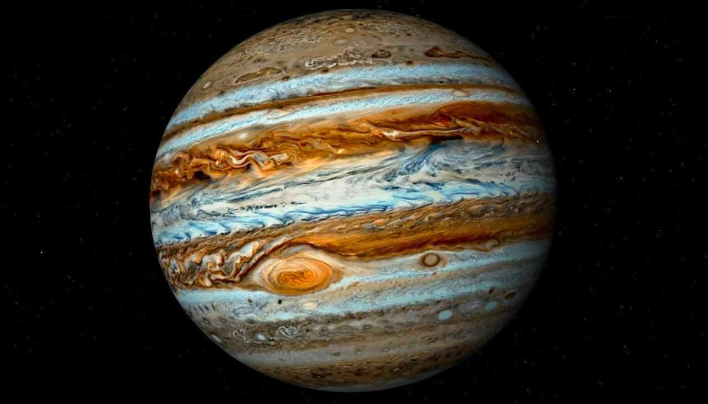

≈сли вы посмотрите на северо-западную часть неба после захода —олнца (юго-западную в северном полушарии), то вы обнаружите одну €ркую точку света, котора€ легко выдел€етс€ по отношению ко всему, что находитс€ вокруг нее.
Ёто и есть планета ёпитер, си€юща€ интенсивным и ровным светом.
—егодн€ люди могут изучить этот газовый гигант как никогда.
ѕосле путешестви€ длинной в п€ть лет и дес€тилетий проведенных в планировании, космический аппарат NASA под названием Juno наконец-то достиг орбиты ёпитера.
“аким образом, человечество становитс€ свидетелем вступлени€ в новый этап исследовани€ самого большого из газовых гигантов в нашей —олнечной системе.
Ќо что мы знаем о ёпитере и с какой базой должны вступить в эту новую научную веху?
¬озврат на главную страницу